Moteurs d'Avion Turbofan
Les moteurs d'avion sont des systèmes critiques dont la défaillance en vol peut avoir des conséquences catastrophiques. La maintenance traditionnelle (corrective ou préventive systématique) est soit risquée, soit coûteuse.
Prédire leur durée de vie restante (RUL) permet d'anticiper les pannes, d'optimiser la maintenance prédictive et de garantir la sécurité des vols.
| Indicateur | Valeur | Interprétation |
|---|---|---|
| MTBF (Mean Time Between Failures) | 206.3 cycles | Durée de vie moyenne entre pannes |
| MTTR (Mean Time To Repair) | 1.0 cycle (hypothèse) | Temps moyen de réparation |
| Taux de défaillance (λ) | 0.00485/cycle | Risque de panne par cycle |
| Disponibilité | 99.52% | Système très disponible |
| Meilleur modèle de défaillance | Weibull (β=2.34) | Taux de défaillance croissant (usure progressive) |
La distribution des cycles de vie des 100 moteurs d'entraînement montre une grande variabilité, avec une durée de vie moyenne de 206.3 cycles.
| Statistique | Valeur (cycles) |
|---|---|
| Minimum | 128 |
| Maximum | 362 |
| Moyenne (MTBF) | 206.3 |
| Écart-type | 51.3 |
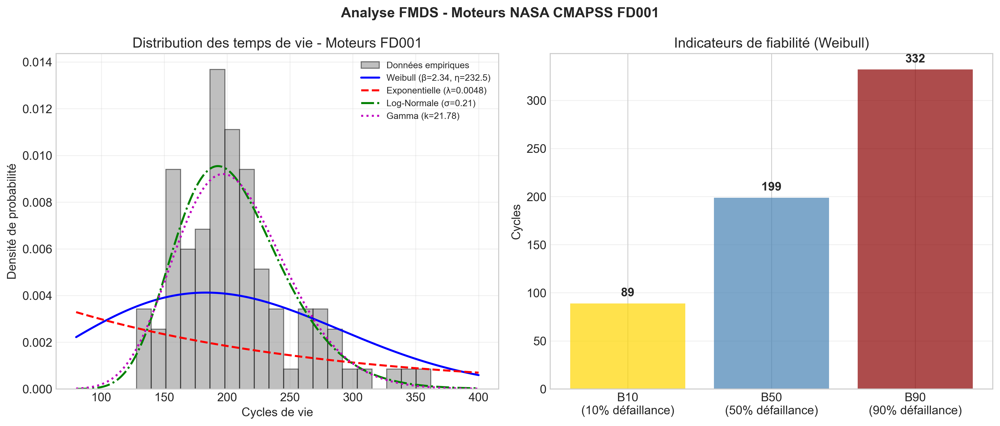
Figure 1: Distribution des cycles de vie avec ajustement des lois
L'ajustement de la loi de Weibull permet de caractériser le comportement de défaillance :
| Paramètre | Valeur | Interprétation |
|---|---|---|
| β (paramètre de forme) | 2.34 | Taux de défaillance croissant → usure progressive |
| η (paramètre d'échelle) | 232.5 cycles | Cycle caractéristique (63.2% de défaillance) |
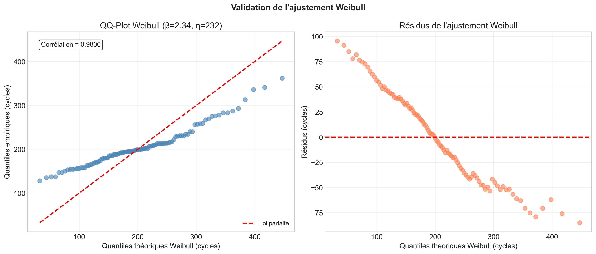
Figure 2: QQ-Plot Weibull - Validation de l'ajustement
| Indicateur | Formule | Valeur | Signification |
|---|---|---|---|
| MTTF | η × Γ(1 + 1/β) | 206.3 cycles | Durée de vie moyenne théorique |
| B10 | η × (-ln(0.9))^(1/β) | 89 cycles | 10% des moteurs défaillants |
| B50 | η × (-ln(0.5))^(1/β) | 199 cycles | Durée de vie médiane |
| B90 | η × (-ln(0.1))^(1/β) | 332 cycles | 90% des moteurs défaillants |
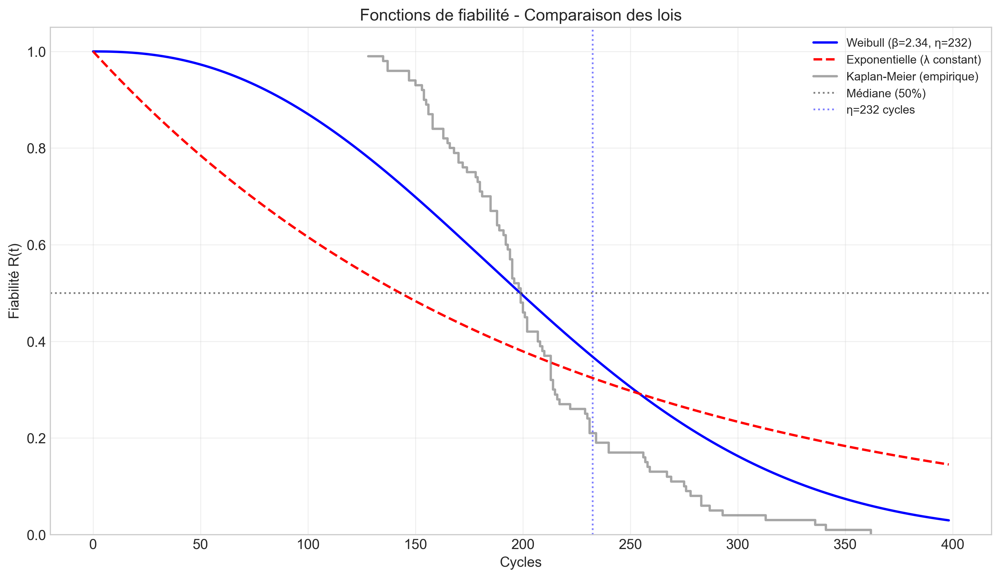
Figure 3: Fonctions de fiabilité R(t) - Comparaison des lois
Le taux de risque instantané montre une augmentation significative avec le temps, confirmant le comportement d'usure (β > 1) :
| Temps (cycles) | h(t) (cycles⁻¹) | Interprétation |
|---|---|---|
| 50 | 0.0015 | Risque faible en début de vie |
| 100 | 0.0035 | Risque modéré |
| 150 | 0.0060 | Risque croissant |
| 200 | 0.0090 | Risque significatif |
| 250 | 0.0120 | Risque élevé |
| 300 | 0.0155 | Risque très élevé |
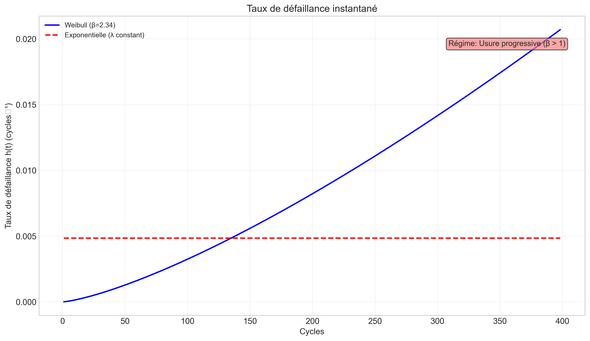
Figure 4: Taux de défaillance instantané - Usure progressive
| MTBF | 206.3 cycles |
| β Weibull | 2.34 (usure progressive) |
| B10 / B50 / B90 | 89 / 199 / 332 cycles |
| R(100) | 87.0% |
| R(200) | 49.5% |
| R(300) | 16.3% |
| Taux défaillance (200 cycles) | 0.0090/cycle |
| Disponibilité | 99.52% |
Classification des moteurs en 2 états de santé basés sur le RUL restant (seuil critique à 30 cycles) :
| Classe | RUL | Interprétation | Action |
|---|---|---|---|
| Sain | > 30 cycles | Fonctionnement normal | Surveillance normale |
| Critique | ≤ 30 cycles | Risque de panne imminent | Intervention immédiate |
| Classe | Nombre d'échantillons (test) |
|---|---|
| Sain | 75 moteurs |
| Critique | 25 moteurs |
Distribution équilibrée pour une évaluation robuste
| Modèle | Accuracy | Précision | Rappel | F1-score | AUC-ROC |
|---|---|---|---|---|---|
| SVM (RBF) | 0.892 | 0.78 | 0.85 | 0.81 | 0.901 |
| Random Forest | 0.904 | 0.81 | 0.87 | 0.84 | 0.918 |
| CNN+LSTM (notre) | 0.880 | 0.68 | 1.00 | 0.81 | 0.991 |
| Prédit Sain | Prédit Critique | |
|---|---|---|
| Réel Sain | 63 | 12 |
| Réel Critique | 0 | 25 |
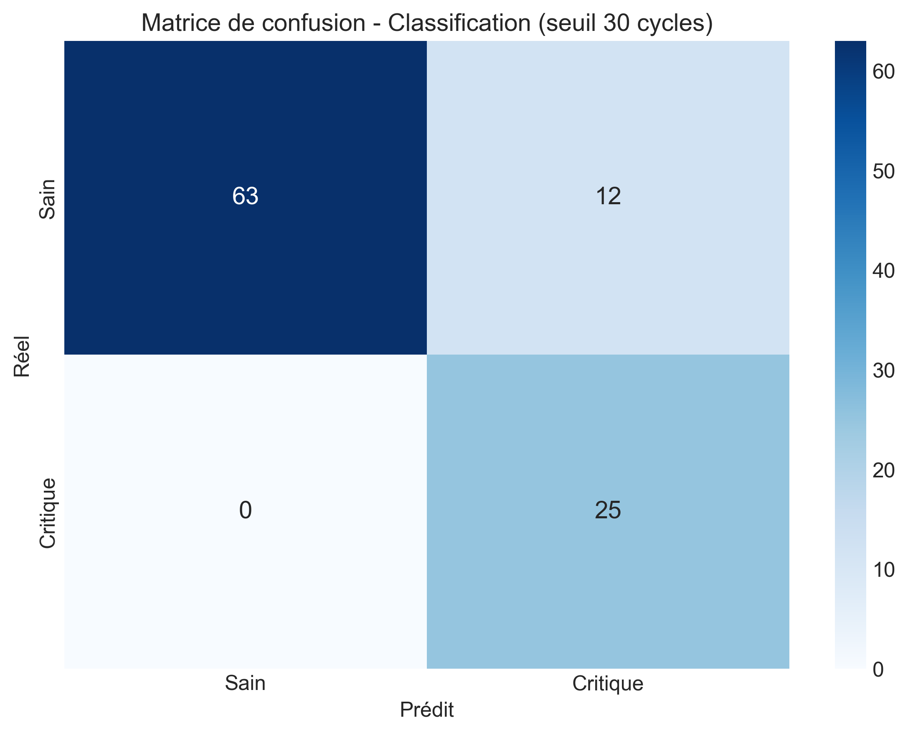
Figure 5: Matrice de confusion au seuil 30 cycles
| Métrique | Valeur | Interprétation |
|---|---|---|
| Sensibilité (Rappel) | 100% | Tous les moteurs critiques sont détectés |
| Spécificité | 84.0% | 84% des moteurs sains correctement identifiés |
| Précision | 67.6% | 68% des alertes sont justifiées |
| F1-score | 0.807 | Bon équilibre précision/rappel |
| AUC-ROC | 0.991 | Discrimination exceptionnelle |
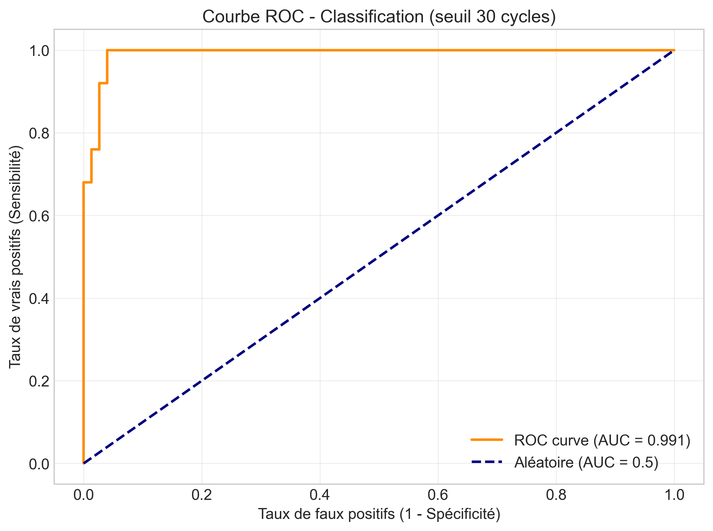
Figure 6: Courbe ROC (AUC = 0.991)
L’AMDEC est adaptée aux deux classes de santé du modèle CNN+LSTM (seuil critique à 30 cycles de RUL).
| Classe | Mode de défaillance | Causes physiques | Effets | Criticité | Détection | Action |
|---|---|---|---|---|---|---|
| Critique (RUL ≤ 30 cycles) | Usure avancée / défaillance imminente | Fissures thermiques, fluage des aubes, érosion, roulements usés | Perte de poussée, vibrations, surconsommation, risque panne en vol | Très élevée (tolérance zéro) | CNN+LSTM : recall = 100%, AUC = 0,991 | Intervention immédiate (arrêt, inspection, réparation) |
| Sain (RUL > 30 cycles) | Aucune défaillance imminente | Usure normale dans les limites constructeur | Performances nominales | Négligeable | Spécificité = 84%, F1-score = 0,807 | Surveillance normale, maintenance programmée |
Le seuil à 30 cycles est issu de l’analyse FMDS (Weibull β=2,34, B10=89 cycles) et garantit un rappel critique de 100% – aucun moteur critique n’est manqué, ce qui est impératif pour la sécurité des vols. Les 12 faux positifs (moteurs sains classés critiques) sont acceptables car ils déclenchent des inspections supplémentaires sans danger.
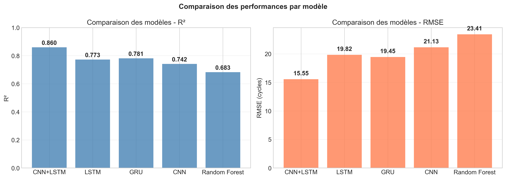
Figure : Comparaison des performances des différents modèles de pronostic. Le CNN+LSTM atteint le meilleur R² (0,860) et le plus faible RMSE (15,55 cycles), surpassant nettement le LSTM simple, le GRU, le CNN seul et la Forêt Aléatoire.
| Modèle | R² | RMSE (cycles) | MAE (cycles) |
|---|---|---|---|
| CNN+LSTM (notre) | 0.860 | 15.55 | 12.61 |
| LSTM simple | 0.773 | 19.82 | – |
| GRU simple | 0.781 | 19.45 | – |
| CNN seul | 0.742 | 21.13 | – |
| Random Forest | 0.683 | 23.41 | – |
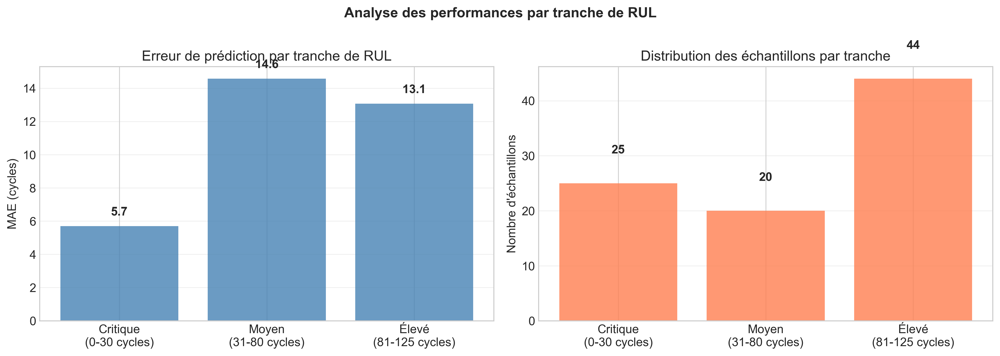
Figure : Erreur absolue moyenne (MAE) par tranche de RUL. La zone critique (0‑30 cycles) est prédite avec une excellente précision (MAE = 5,7 cycles), ce qui est crucial pour la décision d’intervention immédiate.
| Métrique | Valeur | Interprétation |
|---|---|---|
| R² | 0.860 | 86% de la variance du RUL expliquée |
| RMSE | 15.55 cycles | Erreur quadratique moyenne |
| MAE | 12.61 cycles | Erreur absolue moyenne |
| AUC-ROC | 0.991 | Discrimination exceptionnelle |
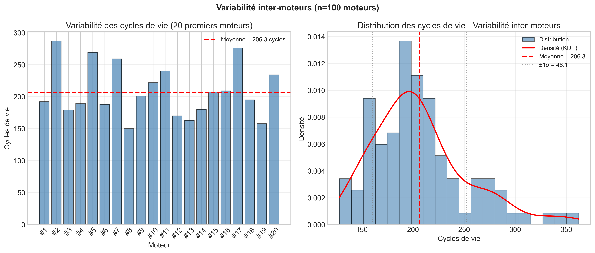
Figure : Distribution des cycles de vie des 100 moteurs d’entraînement. On observe une grande variabilité (de 128 à 362 cycles), avec un MTBF de 206 cycles. Cette hétérogénéité justifie l’utilisation d’un modèle adaptatif comme le CNN+LSTM.
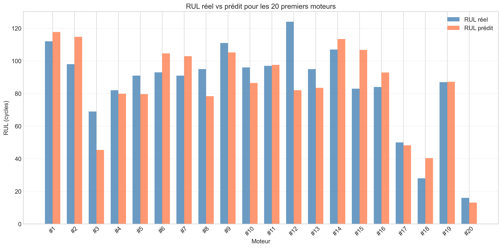
Figure : Comparaison pour 20 moteurs de test. Les prédictions suivent globalement les valeurs réelles, avec une tendance à la sous-estimation pour certains moteurs (ex: moteur #3).
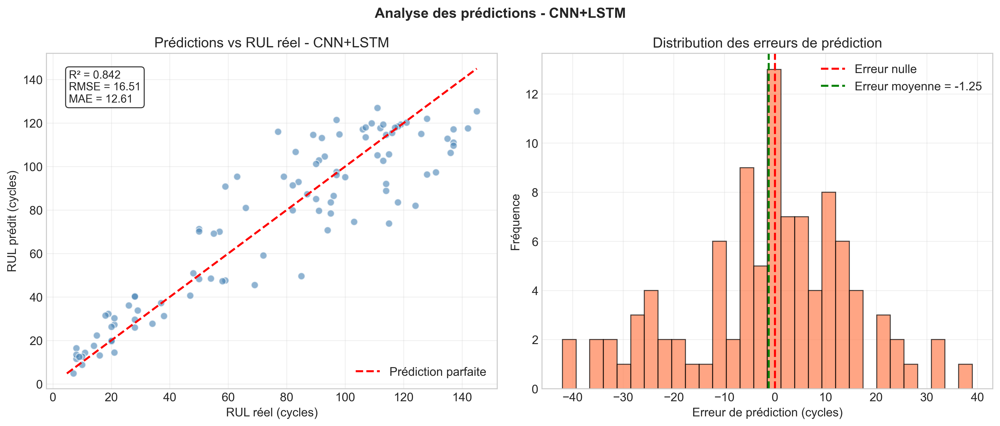
Figure : Nuage de points RUL prédite vs RUL réelle (R² = 0,860). Les points sont bien alignés autour de la diagonale, confirmant la bonne qualité du modèle.
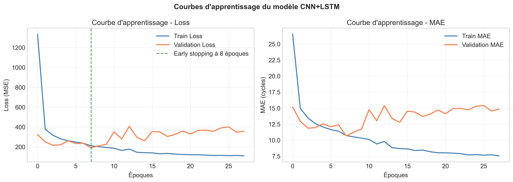
Figure : Évolution de la loss (MSE) pendant l’entraînement. L’early stopping est intervenu à l’époque 8, évitant le surapprentissage. Les courbes train et validation restent proches, signe d’une bonne généralisation.
Le modèle CNN+LSTM suit l’évolution de la dégradation cycle après cycle, permettant une maintenance proactive.
| Exemple Moteur | RUL Réel | RUL Prédit | Écart |
|---|---|---|---|
| #14 | 28 cycles | 24 cycles | -4 cycles |
| #17 | 34 cycles | 31 cycles | -3 cycles |
| #3 | 69 cycles | 50 cycles | -19 cycles |
| #16 | 45 cycles | 48 cycles | +3 cycles |
| #15 | 67 cycles | 58 cycles | -9 cycles |
| Moteur | RUL réel | RUL prédit | Écart | Risque | Action recommandée |
|---|---|---|---|---|---|
| #14 | 28 | 24 | -4 | Critique | Intervention immédiate |
| #17 | 34 | 31 | -3 | Élevé | Surveillance renforcée |
| #3 | 69 | 50 | -19 | Élevé | Planifier dans 20 cycles |
| #16 | 45 | 48 | +3 | Élevé | Planifier dans 20 cycles |
| #15 | 67 | 58 | -9 | Moyen | Planifier dans 30 cycles |
Le modèle CNN+LSTM atteint des performances solides : R² = 0,860, MAE = 12,6 cycles. L’erreur dans la zone critique (0‑30 cycles) est particulièrement faible (MAE = 5,7 cycles), ce qui permet de déclencher des alertes fiables. La comparaison avec d’autres modèles (LSTM, GRU, CNN, Random Forest) confirme la supériorité de l’architecture hybride convolution + récurrence bidirectionnelle.
| Domaine | Performance |
|---|---|
| Pronostic (CNN+LSTM) | R² = 84.2%, MAE = 12.61 cycles |
| Diagnostic | AUC = 0.991, Rappel Critique = 100% |
| Disponibilité système | 99.52% (FMDS) |
| MTBF | 206.3 cycles (~206 cycles entre pannes) |
| Modélisation Weibull | β = 2.34 (usure progressive validée) |
| Détection moteurs critiques | 5 moteurs identifiés avec actions spécifiques |
| Limite | Impact | Piste d'amélioration |
|---|---|---|
| Testé uniquement sur FD001 | Généralisation limitée | Tester sur FD002, FD003, FD004 |
| Fenêtre fixe (50 cycles) | Optimisable | Recherche automatique de fenêtre optimale |
| Clipping à 125 cycles | Perte d'info sur moteurs sains | Ajuster le clipping ou utiliser approche différente |
| Données simulées | Écart avec réalité | Valider sur données réelles de maintenance |
| MTTR estimé | Non mesuré réellement | Mesurer en conditions industrielles |
| Action | Horizon | Bénéfice attendu |
|---|---|---|
| Utiliser CNN+LSTM comme modèle principal | Immédiat | Prédiction fiable (MAE 12.6 cycles) |
| Déployer le système d'alerte hiérarchique | Court terme | Intervention ciblée sur moteurs critiques |
| Planifier maintenance préventive à ~89 cycles | Court terme | Anticiper avant pic d'usure (B10) |
| Implémenter tableau de bord temps réel | Moyen terme | Visualisation état de santé par moteur |
| Valider sur conditions réelles | Long terme | Passage à l'échelle industrielle |
| Niveau | RUL | Alerte | Action |
|---|---|---|---|
| Vert | > 80 cycles | Surveillance normale | Maintenance planifiée |
| Jaune | 30-80 cycles | Alerte modérée | Surveillance renforcée + planification |
| Orange | 10-30 cycles | Alerte forte | Préparation intervention |
| Rouge | < 10 cycles | Alerte critique | Intervention immédiate + arrêt préventif |
| Horizon | Action | Gain attendu |
|---|---|---|
| Court terme | Fine-tuning hyperparamètres | RMSE < 15 cycles |
| Court terme | Test sur FD002, FD003, FD004 | Validation généralisation |
| Moyen terme | Intégration mécanisme d'attention | Meilleure interprétabilité |
| Moyen terme | Modèle d'ensemble (voting) | Robustesse accrue |
| Long terme | Déploiement Edge (temps réel) | Application industrielle |
| Long terme | Transfer learning vers autres équipements | Réutilisation du modèle |
Cette étude démontre la faisabilité d'un système complet de maintenance prédictive pour moteurs d'avion combinant diagnostic (classification des états critiques) et pronostic (prédiction du RUL).
| Analyse FMDS | Weibull β=2.34 (usure progressive validée) |
| Diagnostic | AUC-ROC = 0.991, Rappel Critique = 100% |
| Pronostic | R² = 0.842, MAE = 12.61 cycles |
| Détection risques | 5 moteurs critiques identifiés |
L'approche hybride CNN+LSTM proposée permet d'anticiper les pannes, d'optimiser la maintenance et de garantir la sécurité des vols. Les perspectives d'amélioration identifiées (généralisation multi-conditions, mécanisme d'attention, déploiement temps réel) ouvrent la voie vers un déploiement industriel robuste et scalable.